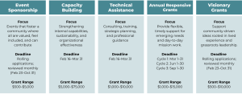

Additional Links
The Community Vision Fund (CVF) is an unrestricted fund within the Community Foundation with the ability to be agile due to its discretionary nature. Granting through this fund remains committed to fulfilling community needs and advancing the well-being for all in Calumet, Outagamie, Shawano, Waupaca, and the Neenah-Menasha area of Winnebago counties.
With fresh insights from the Fall 2025 nonprofit survey, the Community Foundation is committed to listening and adjusting course to remain responsive to community needs. Our team has re-evaluated the Community Vision Fund priorities to reflect what we’ve heard and to integrate best practices learned over the past year.

Focus: Events that foster a community where all are valued, feel included, and can contribute
Grant Deadline: Opens February 23; Closes October 31; Rolling applications reviewed and responded to by the following month*
Grant Ranges: $500 to $5,000
Grant Considerations:
Application Process: Online portal application with high-level event summary report. Submission must be at least 60 days prior.
View Event Sponsorship Applicant Guidelines Here
*Event sponsorship applications will open on February 23rd. While we routinely ask for 60-day advance notice, we recognize that the timing of our application opening might impact this turnaround requirement. For any events happening in March and April, we are instead requesting a 30-day advance notice. Any events occurring in May or later will be required to submit at least 60 days prior to the event start date.
Focus: Providing nonprofit organizations with the opportunity to enhance their internal capabilities and effectiveness. These grants focus on new strategies, improving processes, and strengthening organizational capacity to ensure long-term sustainability
Grant Deadlines: Opens February 16; Closes March 31st at 11:59pm
Grant Ranges: Grant awards will range from $5,000 to $75,000 for a one-year award
Grant Considerations This is not an exhaustive list, please reach out if you have questions about project alignment.
Application Considerations: To encourage shared investment and long-term sustainability, capacity building grant requests are limited to no more than 75% of the total project budget.
Focus: Providing support in the form of professional advice, consulting, training, and/or strategic planning. They are designed to help organizations achieve mission sustainability and their long-term goals with more certainty and clarity.
Grant Deadlines: Opens February 16; Closes March 31st at 11:59pm
Grant Ranges: Grant awards will range from $1,000 to $10,000 for a one-year award
Grant Considerations This is not an exhaustive list, please reach out if you have questions about project alignment.
Application Considerations: Applications are encouraged to provide a realistic scope of work, timeline and budget that reflects the project, even if it goes beyond the granting range identified above
Focus: Grants play a vital role in strengthening nonprofit resilience by giving organizations the flexible, timely support they need to respond to emerging challenges and opportunities. These cycles honor the reality of day-to-day mission work, allowing nonprofits to direct resources where they will have the greatest impact.
The Annual Responsiveness grant is our pilot effort at being more open to hearing what nonprofits need in the moment. The 2025 nonprofit survey demonstrated that overall, nonprofits desire “general, responsive funding.” The Annual Responsiveness grant allows nonprofits to share an overall picture of opportunity: You can submit for general operating and/or a specific program. This is your time to help us understand what is currently happening within your organization and how continued philanthropic support would make a difference.
Grant Deadlines: With recognition of the cyclical nature of philanthropy, we will have three cycles. Applicants are encouraged to apply to the cycle that best aligns with their needs:
Grant Ranges: Grant awards will range from $1,000 to $15,000 for a one-year award.
Grant Considerations: Annual responsive grants support flexible, general operating support and the applications will reflect a more general approach to understanding the mission, current work being done, and financial need.
Focus: Visionary grants support community-driven ideas that emerge from lived experience and grassroots leadership. They are designed to elevate voices with lived experience, encourage innovation and experimentation, and support early stage or non-traditional approaches.
Grant Deadline: Opens February 23; Closes October 31; Rolling applications reviewed and responded to by the following month
Grant Ranges: Grant awards will range from $5,000 to $10,000 for a one-year award
Grant Considerations: In alignment with the namesake of this fund, visionary grants are focused on supporting:
View Visionary Grants Applicant Guidelines Here
Yes. You may apply to more than one grant type.
We do encourage you to think about your top needs and prioritize, especially if one of the grants you are applying for is capacity-building. When reviewing applications, we will look at what funding your organization has received from the Community Vision Fund for 2026.
You will see the grant application once the application process opens. If you do not see the application, it means the granting process is not active. To confirm the timeframes for each grant type, click on the 2026 CVF Grant Guidelines grant drop-down above.
Event Sponsorships & Visionary Grants (rolling deadlines)
Capacity Building & Technical Assistance Grants
Annual Responsive Grants
No. Meeting with staff is not required and will not affect your review.
We want to honor your time and have created an Applicant Guidelines for each grant type, which can be found when you click on the 2026 CVF Grant Guidelines grant dropdown. You can submit a grant application without meeting with us, and it will not be evaluated differently.
An organization must be able to demonstrate service to and within our geographical scope of Calumet, Outagamie, Shawano, and Waupaca, and the Neenah-Menasha area of Winnebago counties in order to be considered for funding from the Community Vision Fund.
If a regional or statewide organization applies for funding, clear explanation must be provided of:
Start by reading the Applicant Guidelines that are linked under the guideline dropdowns above. these documents explain the questions for each grant type and what reviewers look for.
If you still aren’t sure, email ceteam@cffoxvalley.org and we’ll connect you with the right team member.
You can, but we strongly encourage you to choose one.
If you are still in a planning phase, trying to identify what capacity is needed, technical assistance may be the better fit.
At this time, we are only piloting one round of the capacity building and technical assistance grants. However, we know needs arise year long.
If you find yourself in this situation, we encourage you to reach out to ceteam@cffoxvalley.org to explain and discuss with a team member. From there, we will work with you on what options we can explore.
Yes.
We do encourage you to think carefully about timing as leadership transitions often bring new strategies, new understandings of capacity needs and priorities, and temporary limits of what the organization can take on. If you do apply, please explain why capacity-building is still the right step now.
Yes.
Many nonprofits paused hiring to stabilize budgets. If the role is still needed, you may apply for capacity building support. We do encourage you to consider whether you can sustain the role long term, since these grants are one year and we cannot guarantee future funding.
Capital campaigns are not eligible for Community Vision Fund support.
Capital projects may fit in one of these:
You can also email us to talk through your idea before applying. Email ceteam@cffoxvalley.org and provide key updates. We will share the information with the appropriate team member.
While we recognize that many nonprofits continue to need general operating support, we also don’t want to lose focus on the visionary ideas that:
These grants are meant to lift up community driven ideas that may not fit traditional funding boxes. General operating for established programs should redirect to the Annual Responsive grant application.
The grants focus areas (like the Environmental Stewardship Fund) are staff-directed field of interest fund that focuses on supporting creative, economically feasible and environmentally sound solutions that benefit broad segments of the population to improve the well-being of current and future generations.
To apply, use the annual responsiveness grant application through the Community Vision Fund
Last fall, nonprofits across our region completed a survey to share what was hard in 2025 and what would help them move forward.
They told us they need:
Our Community Engagement team also reviewed our own process and talked with peer community foundations. We saw ways to reduce confusion, make the process easier, and respond better to community needs. The result is a refreshed framework with clearer definitions, predictable timelines, and more structured funding options, while keeping partnership, learning, and accessibility at the center.
To increase transparency and make the process easier, the Community Vision Fund will pilot several updates in 2026:
Several core commitments remain the same in order to receive funding.
We know multiyear grants can help nonprofits breathe easier. But when we looked at our past multiyear awards, we saw that:
This year, we want to offer larger one-year grants that nonprofits can use right away based on their most urgent needs.
Past focus areas mixed mission types (like arts or environment) with organizational needs (like financial health). This caused confusion. The 2025 nonprofit survey showed that organizations across all missions face similar challenges. So in 2026, we are focusing on how funding is needed, not the mission area.
Contact us if you need any assistance.
4455 W. Lawrence St.
Appleton, WI 54914
(920) 830-1290
Regular Hours
Monday-Friday: 8 am-4 pm
Summer Hours
Monday-Thursday: 8 am-4 pm
Friday: 8 am-12 pm
Confirmed in compliance with national standards for U.S. community foundations.